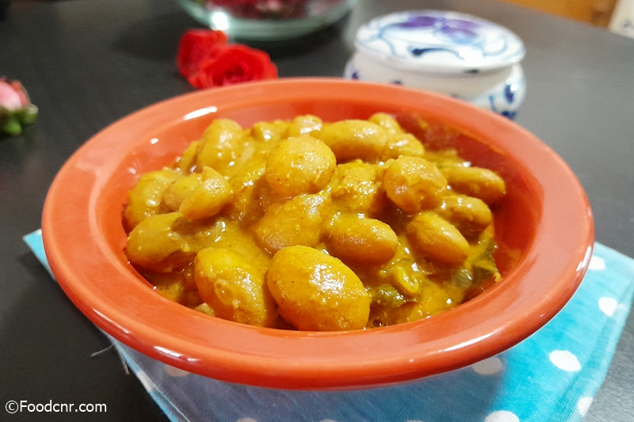

Lima Beanscurry

Today I am going to share how I cooked Lima Beans curry in Sri Lankan style. This curry is also known as butter beans curry. When I saw some fresh lima beans in the market, I bought them without thinking twice. I’ve never cooked fresh lima beans before. But, when I saw these fresh lima beans, I thought they would be a good addition to our meals with packed protein and nutrients including a buttery taste.
In this blog post, we’ll explore the simple art of preparing Lima beans curry in Sri Lankan style. Get ready to savor the rich, creamy textures, and the aromatic spices that make this dish an enduring favorite for all generations. Whether you’re a seasoned cook or a novice in the kitchen, Lima Beans Curry offers a delightful adventure for your palate and a warm, satisfying meal for your soul.
Back to the main page
Ingredients
- 1 cup lima beans
- 1 onion,sliced
- 1 tsp red chill powder
- 1 tsp raw curry powder
- 1/2 tsp fenugreek seeds
- 1/4 tsp turmeric powder
- 1 sprig curry leaves
- 1-inch piece of pandan leaf
- 1-inch piece of cinnamon
- 1 cup thick coconut milk
- 1 cup thin coconut milk
- Salt as per taste
Instructions
- Begin by washing the lima beans thoroughly and draining them of any excess water. Place them in a cooking pot.
- Add all the ingredients mentioned above, (except for the thick coconut milk), into the pot with the lima beans
- Mix the ingredients well to ensure they are evenly distributed throughout the beans.
- Cover the pot and cook the mixture over medium heat until the lima beans are tender and fully cooked. This should take about 15-20 minutes. Stir occasionally to prevent sticking, and check for doneness by testing the tenderness of the beans.
- Cover the pot and cook the mixture over medium heat until the lima beans are tender and fully cooked. This should take about 15-20 minutes. Stir occasionally to prevent sticking, and check for doneness by testing the tenderness of the beans.
- Once the beans are cooked to your satisfaction, it’s time to add the thick coconut milk. Pour it into the pot and stir gently to combine.
- As the coconut milk starts to boil, remove the curry from the stove. If you prefer a drier consistency, you can continue to cook for a few more minutes until the excess liquid evaporates. Or adjust the curry/gravy for your preferred thickness.
- Your Lima Beans Curry is now ready to be served. This delightful dish pairs perfectly with plain rice and other side dishes.
Facebook account : chathura Prabodha